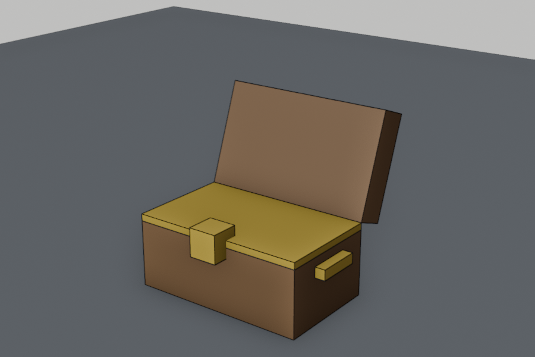
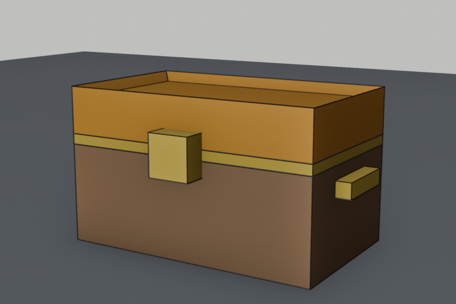
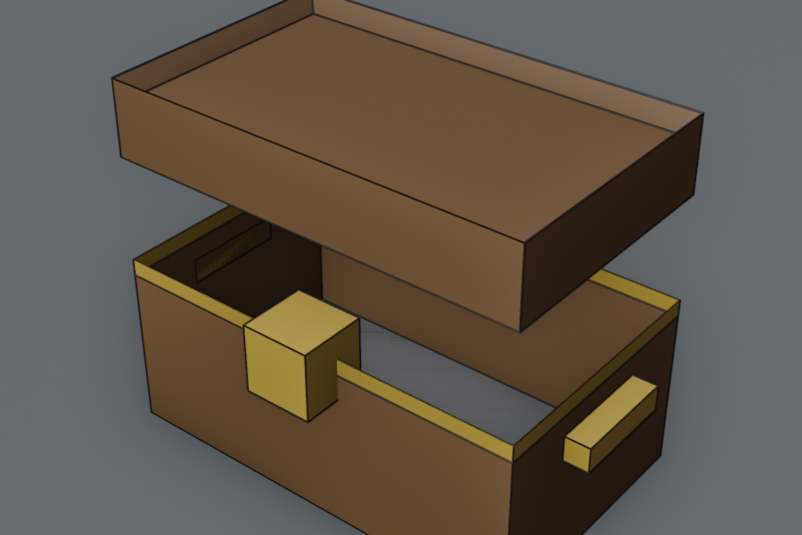
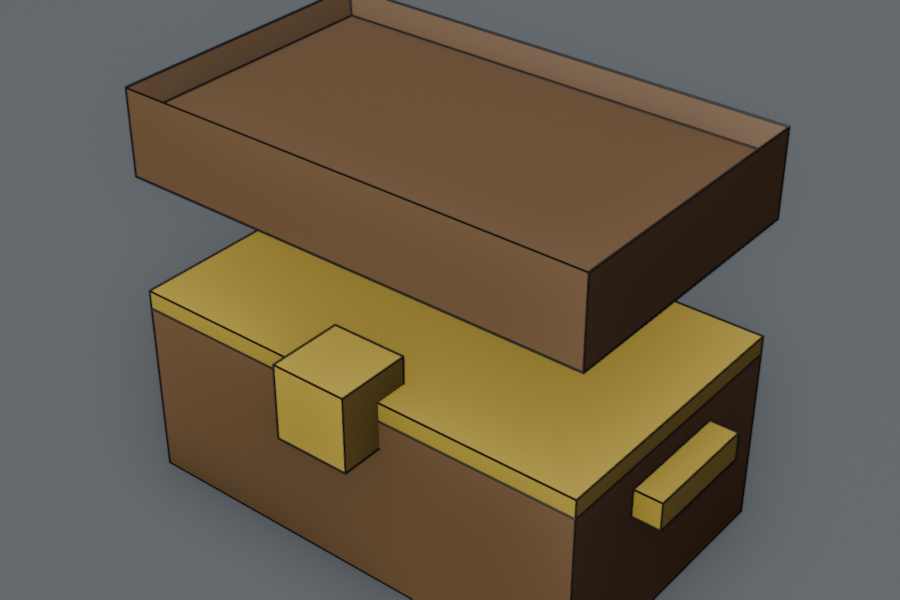
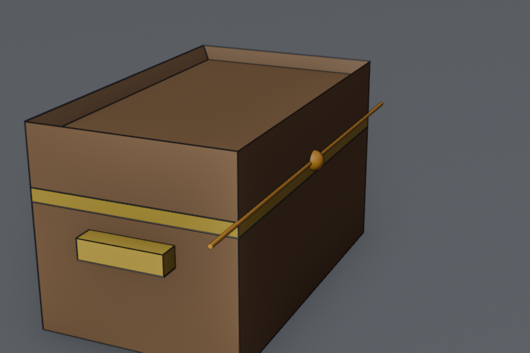
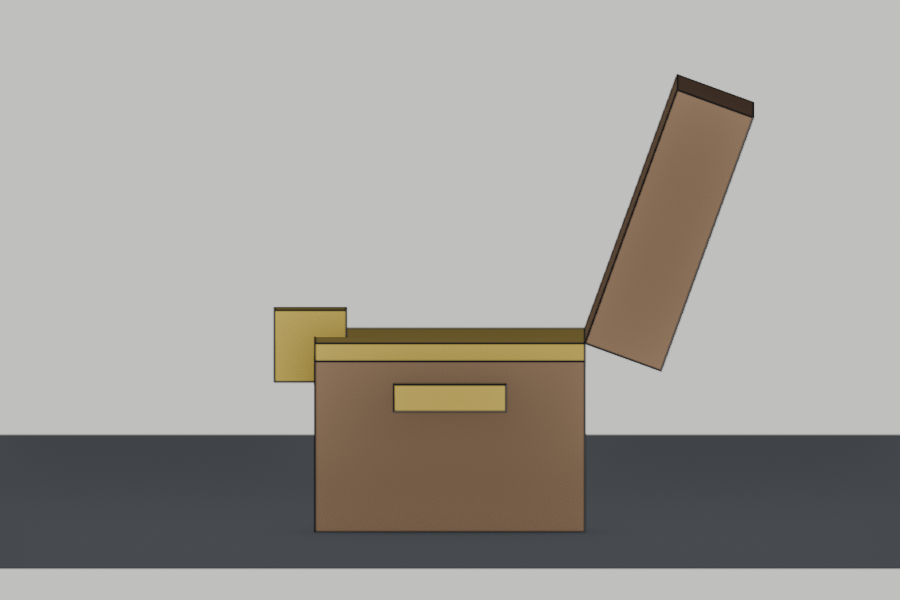

Lesson 11 · Blender track × Godot
A chest that opens
Split the lid off at a hinge in Blender, animate it in Godot, and make it the reward that ends the coin hunt.

Warm-up: from memory
From Lesson 10: why did the whole chest turn gold instead of just the band?
Show answer
Either Gold replaced the material in the only slot (you need a second slot via +), or every face was still selected when you pressed Assign.From Lesson 8: what does a Blender object's origin decide?
Show answer
Where the object “is”, and the pivot for rotation and scaling. Today that's the whole trick: the lid rotates around its origin, so the origin goes on the hinge.From Lesson 6: animation_finished on a looping clip: does it fire?
Show answer
No, looping clips never finish. Your lid animation won't loop.① Worked example: lid and hinge in Blender
A part that moves on its own must be its own object, because Godot animates nodes and each Blender object becomes one node. It also rotates around its origin, so the origin must sit on the hinge line. Everything below serves those two rules.










-110 swings it open around the hinge- Open
chest.blend. SelectChest, Tab into Edit Mode, vertex mode (1), and deselect everything with Alt+A. - Front orthographic view (Numpad1), then X-ray with Alt+Z. The manual: it makes objects transparent, “allowing you to see and select items that would otherwise be occluded”. Without it, a box selection only grabs the vertices you can see from the front, not the ones at the back.
- Drag a box from just above the gold band to above the top, wide enough to include both sides. The lock's upper corners get caught too: hover over the lock and press Shift+L, which deselects the linked part under the cursor. Compare with the first picture.
- P → Selection. Separate “splits the mesh into two or more new, separate mesh objects”. Tab out, and rename the new
Chest.001in the Outliner toLid. Alt+Z turns X-ray off again. - Fill the holes, once per object. Select it, Tab, then Select → Select All by Trait → Non Manifold (this selects the open hole's border edges), and press F to make a face. For the
Chest, also highlight the Gold slot and Assign while that new face is selected: the treasure. Tab out. - Hinge origin: select
Lid, Tab, edge mode (2), and click the lid's bottom back edge (back is +Y: the side you see with Ctrl+Numpad1). Shift+S → Cursor to Selected. Tab out, then Object → Set Origin → Origin to 3D Cursor. Then Shift+S → Cursor to World Origin, to tidy up. - Test the hinge: with the Lid selected, R X
-110. The lid should swing back and open like the last picture. Then RMB (or Esc) to cancel, so it stays closed. - Export: select
Chest,LidandHandles, then export over your existingchest.glbwith the usual settings (Selected Objects, +Y Up, Apply Modifiers).
Trap check: why must you not press Ctrl+A → All Transforms on the Lid?
Show answer
Applying location sets the object's location to (0, 0, 0) by moving its origin back to the world origin. That undoes your hinge. Lesson 9's “apply transforms” habit is for static props. A moving part keeps its origin where it pivots. (Applying only rotation and scale is harmless here, because they're already clean.)I ran these steps with a script in Blender 5.2.2 and imported the result in Godot 4.7.2. The glb contains three nodes, Chest, Handles and Lid, with the Lid at (0, 0.42, −0.3). That's the hinge, converted to Godot's axes.
② Completion: animate it in Godot
New editor steps (full instructions)
The docs: “A keyframe defines the value of a property at a point in time.” And: “Two keyframes are all it takes to obtain a smooth motion.”
- Open
chest.tscn. Godot has reimportedchest.glb, so the instance now contains a Lid. To reach it, right-click the glb instance → Editable Children. Its child nodes appear in the tree. - Add an
AnimationPlayeras a child of theChestroot. Selecting it opens the Animation panel at the bottom. - In that panel: Animation → New, name it
open. Set the length field (top right of the panel, default 1 s) to0.6. - Select the
Lidnode, with the timeline cursor at 0. In the Inspector, open Transform and click the small key icon next to Rotation. Confirm Create for the new track, keeping “Create RESET Track(s)” ticked. RESET stores the closed pose. - Click the timeline at
0.6. Set the Lid's Rotation x = -110, and click the Rotation key icon again. - Press the panel's play button: the lid swings open. Drag the cursor back to 0 before saving.
The −110° is the same as in Blender: the export's axis conversion is itself a rotation around X, so X rotations carry over unchanged. Tested: the front edge of the lid rose from 0.52 m to 0.95 m.
The code: fill in the TODOs
Attach this to the Chest root (the StaticBody3D from Lesson 10):
extends StaticBody3D
signal opened
@onready var anim: AnimationPlayer = $AnimationPlayer
var is_open := false
func open() -> void:
if is_open:
return # TODO 1: explain to yourself why this guard is here
is_open = true
# TODO 2: play the "open" animation
# TODO 3: tell whoever is listening that the chest openedThen in world.gd, the node that knows both sides (Lesson 6):
# TODO 4: connect all_coins_collected to the chest's open()Done when: collecting the last coin makes the lid swing open.
Solution
Show solution
anim.play("open") # TODO 2
opened.emit() # TODO 3
all_coins_collected.connect($Chest.open) # TODO 4 (world.gd _ready)open() twice would replay the animation and emit opened twice, so the player would celebrate twice. It's the same reason change_state returns early in Lesson 7.
③ On your own: open it by walking up
Right now the chest pops open wherever the player happens to be. Make the player walk to it. Everything you need comes from Lessons 3, 6 and 7.
- Before every coin is collected, walking up to the chest does nothing.
- After the last coin, the chest is unlocked. Walking within about 1.5 m opens it.
- The player dances when the chest opens, not when the last coin is collected.
chest.tscnnever references the world or the player's script. All connections are made inworld.gd.
Hint 1: the shape of the solution
Show hint
AnArea3D child of the chest (name it OpenZone) with a sphere shape of radius 1.5. An unlock() method that sets a flag. The zone's body_entered calls open() only if unlocked and the body is in the "player" group, exactly like your coin.Hint 2: the world's wiring
Show hint
Two connections:all_coins_collected → $Chest.unlock, and $Chest.opened → $Player.celebrate. Remove the old all_coins_collected → celebrate and → open connections.Solution (tested in Godot 4.7.2)
Show solution
# chest.gd: additions
@onready var open_zone: Area3D = $OpenZone
var unlocked := false
func _ready() -> void:
open_zone.body_entered.connect(_on_open_zone_body_entered)
func unlock() -> void:
unlocked = true
func _on_open_zone_body_entered(body: Node3D) -> void:
if unlocked and body.is_in_group("player"):
open()
# world.gd, in _ready
all_coins_collected.connect($Chest.unlock)
$Chest.opened.connect($Player.celebrate)opened fired, lid at −110°.
Edge case to predict: the player is already standing next to the chest when they collect the last coin. What happens, and how would you fix it?
Show answer
Nothing happens until they step out and back in, becausebody_entered only fires on entering. Fix: in unlock(), check open_zone.get_overlapping_bodies() for the player and open right away. Or decide it's fine: place the chest away from the coins.Check yourself
Why did the lid have to become a separate object in Blender?
The lid opens by spinning around its middle instead of the back edge. Cause?
Why does Lesson 9's “apply all transforms” habit not apply to the lid?
Why does the chest emit opened instead of calling player.celebrate() itself?
For next session (spaced recall)
- The two rules for a moving part, and the Blender steps that satisfy them.
- How many keyframes a simple open animation needs, and where the RESET track comes from.
- From Lesson 9: whose origin survives a Join? (It's the opposite operation of today's Separate.)
Kids: this is a real game loop now: search, collect, run to the chest, celebrate. Watch whether they find the chest without being told. If not, that's the next design problem.
Lid flies off sideways, spins around the wrong edge, or nothing appears in the Animation panel? Tell me which step and what you see. Each of these maps to a single step above.